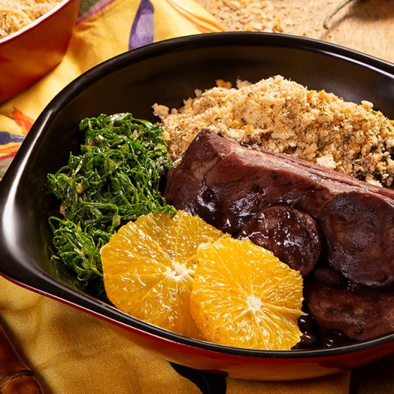
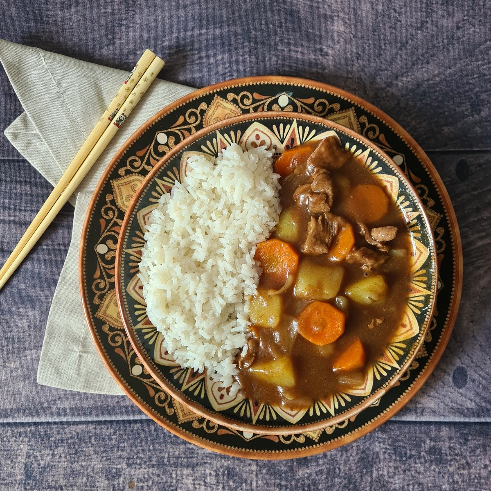
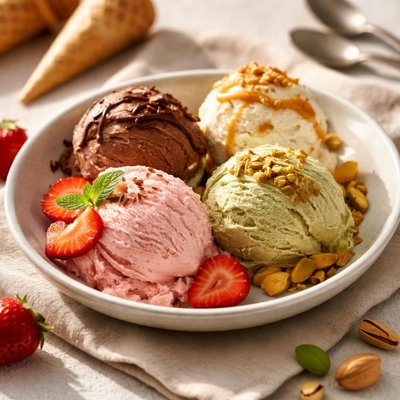
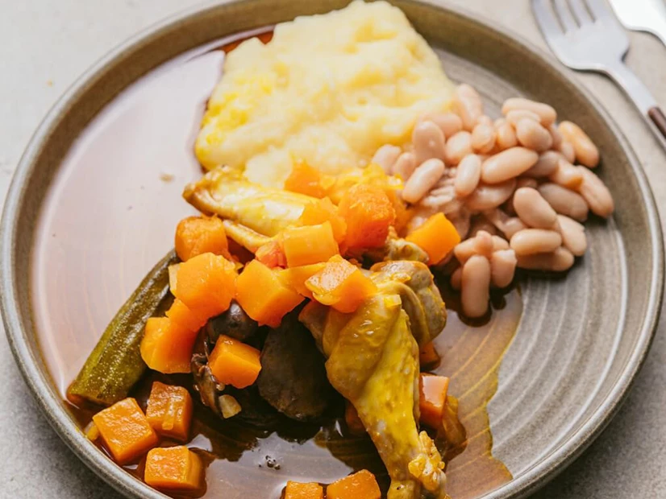
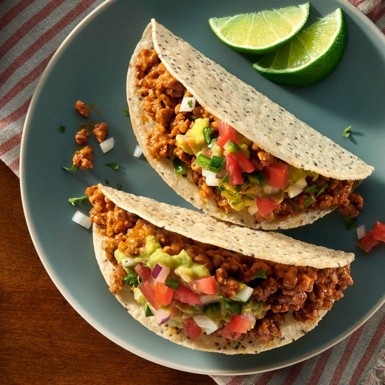

Cardápio
Comidas Pelo Mundo

BRASIL
FEIJOADA
- Feijão preto • Carne seca • Linguiça • Costela
- Acompanha: Arroz • Farofa • Couve •Laranja

JAPÃO
KARÊ
- Batata •Cenoura • Carne (de frango ou boi)
- Picância: Leve • Média • Intenso

ITÁLIA
GELATO
- Chocolate • Pistache • Morango • Doce de leite
- Casquinha • Potinho

ANGOLA
MOAMBA DE GALINHA
- Galinha • Óleo de palma (dendê) • Quiabo
- Acompanha: Funge ou arroz
ÍNDIA
MASALA CHAI
- Chá preto • Canela • Gengibre • Cardamomo
- Aromático • Doce • Levemente picante

MÉXICO
TACOS E GUACAMOLE
- Tortilla • Carne • Tomate • Cebola • Coentro + Guacamole (abacate, limão, sal)
- Abertos • Crocantes • Macios
- Picância: Leve • Média • Intensa
Onde nós encontrar